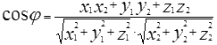
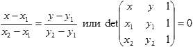

Геометрия: основные понятия
Этапы решения задачи "на геометрию"
- Выразить условия задачи через уравнения и неравенства.
- Решение системы уравнений/неравенств.
- Интерпретация результатов, анализ частных случаев (деление на ноль, корень из отрицательного числа и т.д.).
Системы координат и векторы
Положение любой точки $P$ в пространстве (в частности, на плоскости) может быть определено при помощи той или иной системы координат. Числа, определяющие положение точки, называются координатами этой точки. Наиболее употребительные координатные системы - декартовы прямоугольные. Кроме прямоугольных систем координат существуют косоугольные системы (когда координатные оси расположены не под прямым углом). Прямоугольные и косоугольные координатные системы объединяются под названием декартовых систем координат.
Иногда на плоскости применяют полярные системы координат, а в пространстве - цилиндрические или сферические системы координат.

Рис. 1
Для задания декартовой прямоугольной системы координат нужно выбрать несколько взаимно перпендикулярных прямых, называемых осями. Точка пересечения осей $O$ называется началом координат. На каждой оси нужно задать положительное направление и выбрать единицу масштаба. Координаты точки $P$ считаются положительными или отрицательными в зависимости от того, на какую полуось попадает проекция точки $P$.
Когда говорят про двухмерную систему координат, горизонтальную ось называют осью абсцисс (осью $Ox$), вертикальную ось - осью ординат (осью $Оy$). Положительные направления выбирают на оси $Ox$ - вправо, на оси $Oy$ - вверх. Координаты $x$ и $y$ называются соответственно абсциссой и ординатой точки. Запись $P(a,b)$ означает, что точка $P$ на плоскости имеет абсциссу $a$ и ординату $b$ (рис.1).
Декартовыми прямоугольными координатами точки $P$ в трехмерном пространстве называются взятые с определенным знаком расстояния (выраженные в единицах масштаба) этой точки до трех взаимно перпендикулярных координатных плоскостей. В зависимости от взаимного расположения положительных направлений координатных осей возможны левая и правая координатные системы.

Рис. 2
Отрезок, концы которого упорядочены (рис.2), называется направленным (упорядоченность означает, что один конец отрезка считается начальной точкой, а другой – конечной).
Направленный отрезок называется вектором.
Длина вектора называется его модулем:
| a | – обозначение
модуля вектора a.
Проекции вектора $a$ с начальной точкой $(x_1,y_1)$ и конечной точкой $(x_2,y_2)$ на оси координат называются координатами вектора: $a = \{ x_2 – x_1, y_2 – y_1\}$ или a(X, Y). Модуль вектора через его координаты: $|a| = \sqrt{X^2+Y^2}$
Два вектора считаются равными, если они имеют одинаковую длину и направление (равенство соответствующих координат), следовательно, алгебраическое представление вектора — это упорядоченный набор чисел (его координаты). Сложение и вычитание векторов a(X1,Y1) и b(X2, Y2), умножение вектора на число t определяются по следующим правилам:
a ± b = (X1 ± X2,Y1 ± Y2)
ta = (tX1, tY1)
Вектора, отличающиеся множителем, называются коллинеарными.
Скалярное и векторное произведение
Скалярное произведение двух векторов – это число, равное произведению модулей этих векторов на косинус угла между ними (a, b) = |a|·|b| cosφ.
Следствие. Если два вектора перпендикулярны, то их скалярное произведение равно нулю.
Угол между векторами – это наименьший угол между направленными отрезками, приведенными к одной начальной точке (рис. 3).
Рис. 3
1. Если угол φ - острый, то (a, b)>0.
2. Если угол φ - тупой, то (a, b)<0.
3. Если вектор a перпендикулярен вектору b, то (a, b)=0.
4. (a, a) = |a|2.
Скалярное произведение двух векторов a(X1, Y1) и b(X2, Y2) через их координаты выражается следующим образом: (a, b) = X1 · X2 + Y1 · Y2
Из определения скалярного произведения можно найти косинус угла, выраженный через координаты векторов.
$\cos{\phi}=\frac{{x_1}{x_2}+{y_1}{y_2}}{\sqrt{{x_1}^2+{y_1}^2}\sqrt{{x_2}^2+{y_2}^2}}$

Следствие. Вектор b(Y, -X) будет перпендикулярен вектору a(X, Y).
В трехмерном пространстве для векторов a(X1, Y1 , Z1) и b(X2, Y2, Z2) соответственно формула скалярного произведения выражается: (a, b) = X1·X2 + Y1·Y2 + Z1·Z2 , а для угла -

Рис. 4
Векторное произведение двух векторов – это вектор, обозначаемый [a × b], который определяется следующими условиями:
- длина вектора |[× | = |a|·|b >sinφ; угол между векторами (т.е. равна S - площади параллелограмма, построенного на сторонах a и b);
- [a × ] вектор перпендикулярong>a, так и вектору b;
- [a × b как ось oz
span
>ox и oy, то
есть
вектора a,
Векторное произведение геометрически представлено на рис.4.
Векторное произведение двух векторов через координаты выражается следующим образом:
[a × b] =
(Y1·
Z
- длина результирующего вектора определяет площадь параллелограмма, построенного на заданных векторах;
- нулевое значение длины — параллельность векторов;
- результирующий вектор определяет нормаль к плоскости заданных векторов;
- его направление означает, что один вектор расположен «слева» или «справа» относительно другого.
4.1.3. Уравнения прямой и окружности на плоскости
a) Через заданную на плоскости точку с координатами (X0,y0) можно провести прямую, перпендикулярную вектору $n$(a,b). Для любой точки на этой прямой с координатами (X,Y) направляющий вектор a =lang=EN- US> {X – X0, y – y0} перпендикулярен вект>n, т.е. скалярное произведение (strong>, a) = 0 или A(X – X0) + B(Y – y0) = 0. Раскрывая скобки, легко получить классическое уравнение прямой Ax + By/i> C = 0, где константа C = -A X0 -B y0.
b)
Уравнение
прямй данной Axspan>+ By US> + C = 0, имеет вид
Bx - Ay
+ C1 = 0.

Эта формула выражает коллинеарность векторов {X – X1, Y – y1} и {X2 – X1, y2 – y1} для любой то
) на прямой.От этого уравнения тоже легко перейти к уравнению классического вида Ax + By + C = 0, где A = Y1 – span >y2, Bp;= x2 US> – x1, C =X1 Y2– X2 Y1.
d) Уравнение прямой в параметрическом виде задается системой уравненийgin-left:35.4pt;'>x = x1sp;t (x2 – x1)
y = y+ t (y2< >– y1).<margin-left:35.4pt;'>Эта же система может задавать и отрезок при t2; [0, 1], и луч при t ͧfty]$.
e)
Уравнении с центром в точке с координатами
(X1, ub>1) и радиусом
r имеет вид: (X
f) Уравнения окружности в параметрическом виде выглядят так:
y = y1 + r sinφ при φ ∈ [0, 2π]
Примеры задач
Пересечение 2-х прямых
${A_1}x+{B_1}y+C_1=0$
${A_2}x+{B_2}y+C_2=0$
$x,y - ?$
Выразим $x$ из первого уравнения: $x = \frac{-{B_1}y-C_1}{A_1}$ Выразим $x$ из второго уравнения: $x = \frac{-{B_2}y-C_2}{A_2}$ Приравняем их: $\frac{{B_1}y+C_1}{A_1} = \frac{{B_2}y+C_2}{A_2}$ ${A_1}{B_2}y+{A_1}{C_2}={A_2}{B_1}y+{A_2}{C_1}$ $y = \frac{{A_2}{C_1}-{A_1}{C_2}}{ {A_1}{B_2}-{A_2}{B_1} }$ $x = \frac{-{C_1}-B_1y}{A_1}$ Или по симметрии заменить A на B: $x = \frac{{B_2}{C_1}-{B_1}{C_2}}{ {B_1}{A_2}-{B_2}{A_1} }$